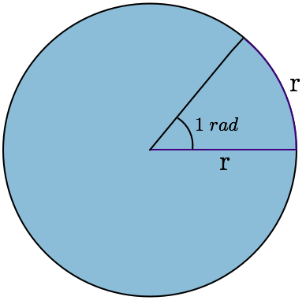

|  |
Conversão de graus para radiano e radiano para grausO GRAU A unidade de medida mais utilizada para medir ângulos ou arcos de circunferência é o grau, cujo símbolo utilizado é o “º”. Por definição, uma circunferência possui 360º, o que nos leva a concluir que 1/360 dela corresponde a 1º, chamado de arco unitário. Veja a figura: O RADIANO O radiano (escreve-se rad) é a razão entre o comprimento de um arco e o seu raio. Sabendo que o comprimento de uma circunferência pode ser calculado pela fórmula C = 2.π.r, a medida de uma circunferência, em radianos é dada por: Daí, podemos concluir que: 2π rad = 360º π rad = 180º π/2 rad = 90º π/4 rad = 45º … Veja como fica a circunferência medida em radianos: E agora vem a grande pergunta: COMO CONVERTER GRAUS EM RADIANOS E VICE VERSA? Simples. Basta compararmos as duas circunferências. Como são grandezas diretamente proporcionais, podemos sempre utilizar a regra de três simples, utilizando 180º = π. |